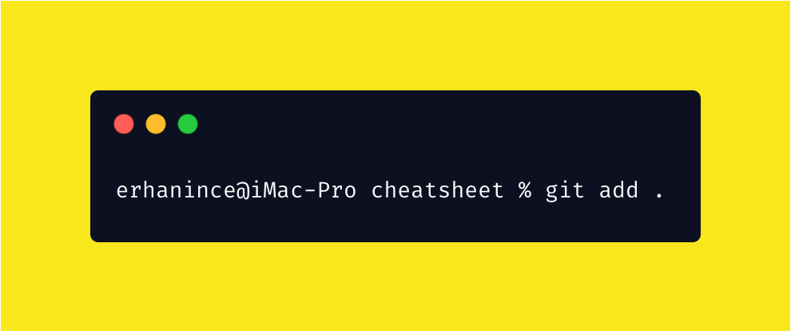
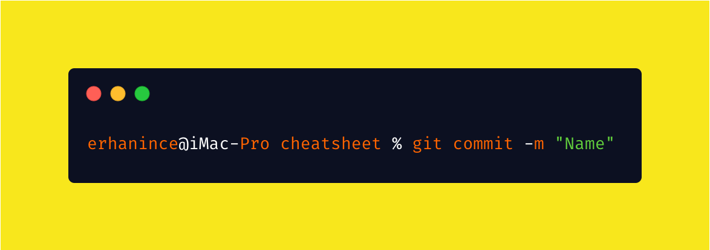
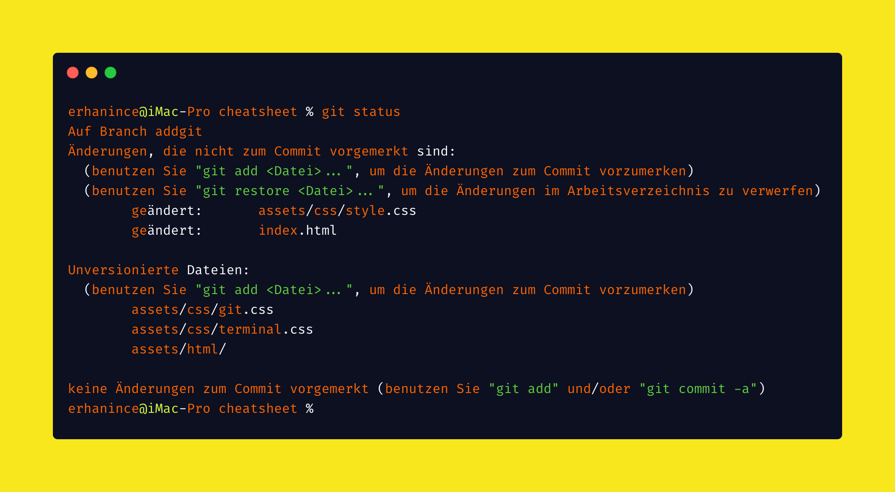
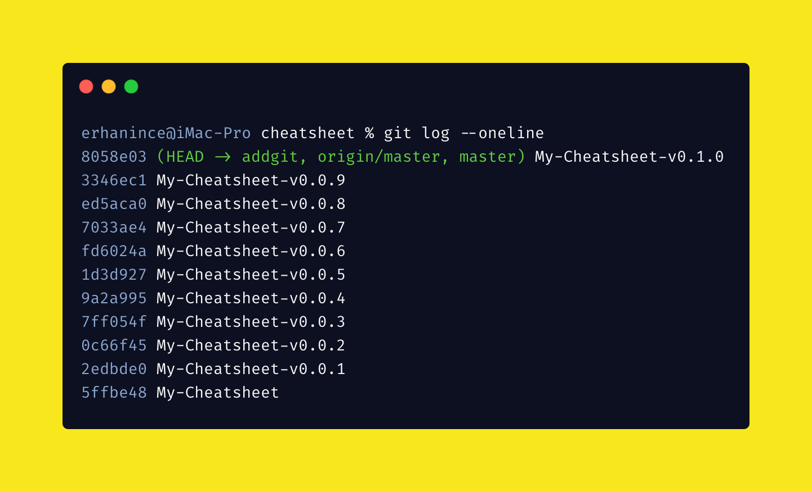
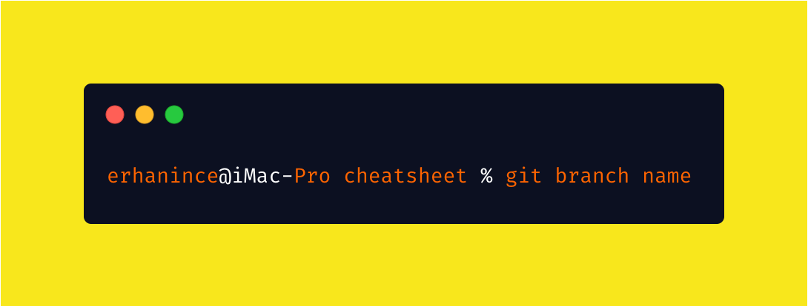
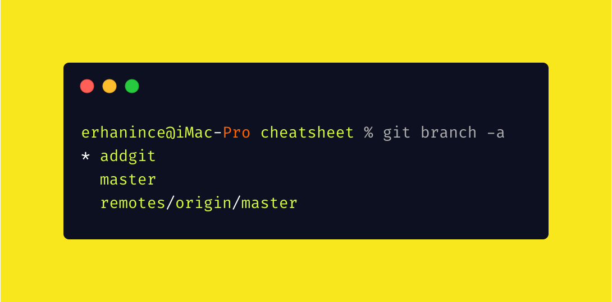
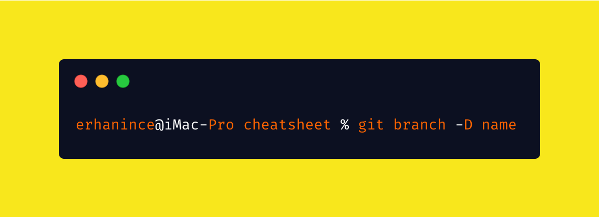
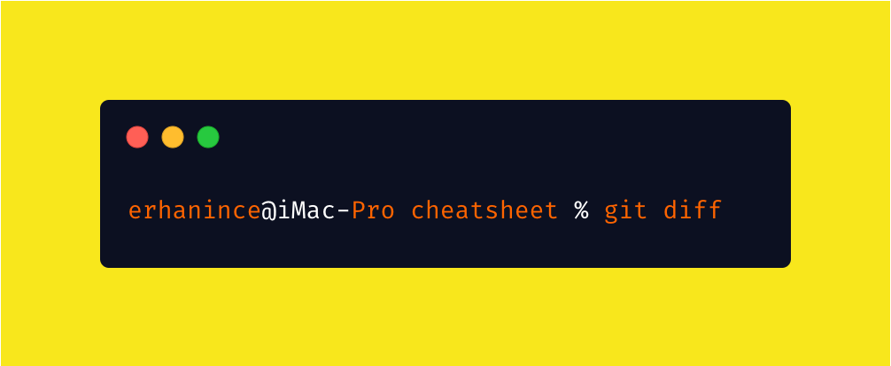
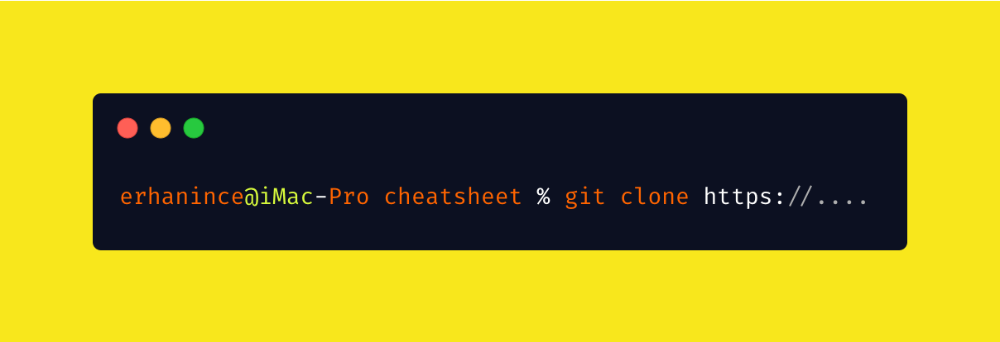
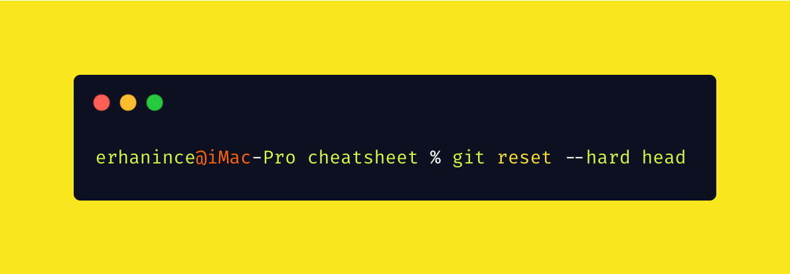

git init

Create empty Git repo in specified directory. Run with no arguments to initialize the current directory as a git repository
git add .
Stage all changes in directory for the next commit. Replace directory with a file to change a specific file.
git commit -m
Commit the staged snapshot, but instead of launching
a text editor, use
Go to github open Repo

Create a new Repo on github.com
git status
List which files are staged, unstaged, and untracked.
git log --oneline
Display the entire commit history using the default format. For customization see additional options. --oneline creates Short form
git branch name
Create a new branch named name.
git branch -a
Shows working Branch
git branch -D ""
rm löscht eine Datei
git diff
Show difference between working directory and last commit.
git clone
Clone repo located at repo onto local machine. Original repo can be located on the local filesystem or on a remote machine via HTTP or SSH
git reset
mit Exit verabschiedet man sich vom Terminal